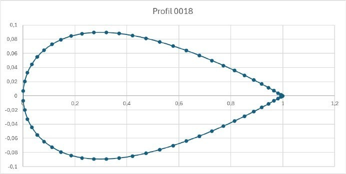
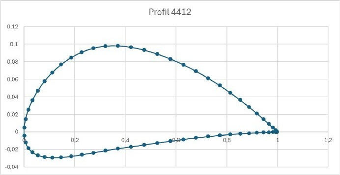

Étude numérique par méthode des panneaux de l'évolution de la portance de deux profils NACA (symétrique et cambré) en fonction de l'angle d'incidence.
Vérifier la linéarité de la portance en fonction de l'angle d'incidence α, en étudiant deux profils NACA entre -3° et 10° : le profil symétrique NACA 0018 et le profil cambré NACA 4412.


Pour le profil cambré NACA 4412, l'analyse des pressions confirme une portance positive même à incidence nulle : la zone de surpression sur l'extrados se réduit progressivement avec α, tandis que la dépression se renforce, jusqu'à disparaître complètement à α = 3°.
NACA 0018 : A = 5,97, αL=0 = -0,0007
NACA 4412 : A = 5,64, αL=0 = -0,13
Théorie du profil mince : A ≈ 2π ≈ 6,283
Les deux profils confirment une évolution quasi linéaire du coefficient de portance avec l'angle d'incidence, avec des valeurs de pente proches de la prédiction théorique. Le léger écart observé pour le NACA 4412 provient de son asymétrie, qui génère une portance positive dès α = 0°, d'où une valeur négative d'αL=0. Ces résultats valident la méthode des panneaux pour reproduire fidèlement la physique de la portance à incidences modérées.